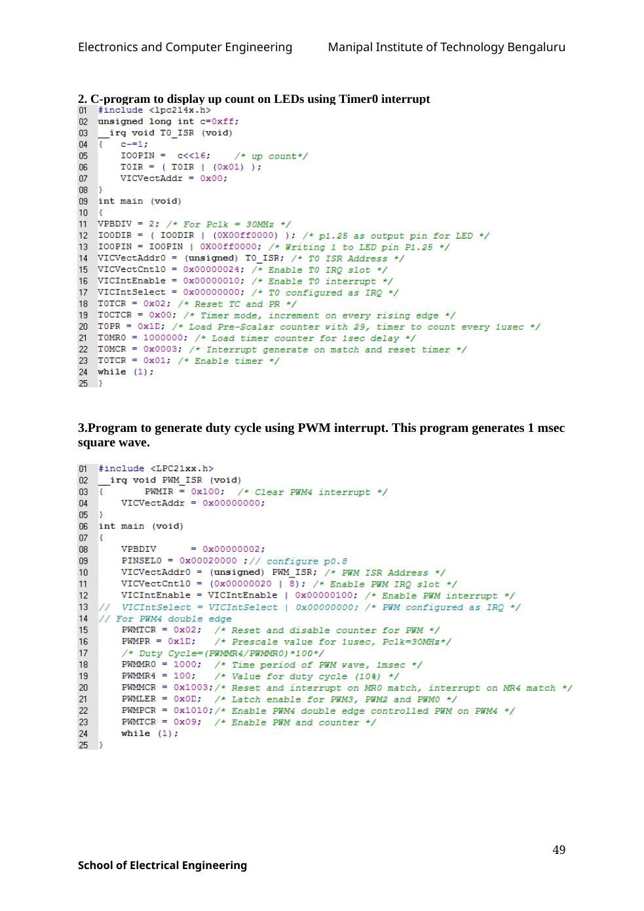

Copyable text transcription
OCR-generated from the original manual page. Check register names, labels, constants and punctuation against the reference image before using.
Electronics and Computer Engineering Manipal Institute of Technology Bengaluru
2. C-program to display up count on LEDs using Timer0 interrupt
Ol #include <lpc214x.h>
02 unsigned long int c=Oxff;
03 _ irq void TO ISR (void)
04 ¢ c-"1;
05 IOOPIN = c<<i1é6; /* up count*/
06 TOIR = ( TOIR | (0x01) );
07 ViCcVectAddr = 0x00;
08 }
09 int main (void)
10 ¢
11 + VPBDIV = 2; /* For Pclk = 30MHz */
12 IOODIR = ( IOODIR | (OXOOff0000) )+: /* pl.25 as output pin for LED */
13 IOOPIN = IOOPIN | OXOOff0000; /* Writing 1 to LED pin P1.25 */
14 VICVectAddrO = (unsigned) TO_ISR; /* TO ISR Address */
15 VICVectCntlO = 0x00000024; /* Enable TO IRQ slot */
16 VICIntEnable = 0x00000010; /* Enable TO interrupt */
17 VICIntSelect = 0x00000000; /* TO configured as IRQ */
18 TOTCR = 0x02; /* Reset TC and PR */
18 TOCTCR = 0x00; /* Timer mode, increment on every rising edge */
20 TOPR = OxiD; /* Load Pre-Scalar counter with 29, timer to count every lusec */
21 TOMRO = 1000000; /* Load timer counter for isec delay */
22 ‘TOMCR = 0x0003; /* Interrupt generate on match and reset timer */
23 %QTOTCR = 0x01; /* Enable timer */
24 while (1);
a}
3.Program to generate duty cycle using PWM interrupt. This program generates 1 msec
square wave.
QO] #include <LPC21xx.h>
02 __irq void PWM_ISR (void)
03 { PWMIR = 0x100; /* Clear PWM4 interrupt */
04 ViCcVectAddr = 0x00000000;
05 }
06 int main (void)
o7 i
08 VPBDIV = 0x00000002;
09 PINSELO = 0x00020000 ;// configure p0o.8
10 VicVectAddrO = (unsigned) PWM_ISR; /+ PWM ISR Address */
1 VicvectCntloO = (0x00000020 | 8); /* Enable PWM IRQ slot */
12 ViICIntEnable = VICIntEnable | 90x00000100; /* Enable PWM interrupt */
13 // VICIntSelect = VICIntSelect | 0x00000000; /* PWM configured as IRQ */
14 // For PWM4 double edge
15 PWMICR = 0x02; /* Reset and disable counter for PAM */
16 PWMPR = 0x1D; /* Prescale value for lusec, Pclk=30MHz*/
17 /* Duty Cycle=(PWMMR4/PHWMMRO) *100*/
18 PWMMRO = 1000; /* Time period of PYM vave, imsec */
19 PWMMR4 = 100; /* Value for duty cycle (10%) */
20 PWMMCR = 0x1003;/* Reset and interrupt on MRO match, interrupt on MR4 match */
21 PWMLER = 0x0D; /+* Latch enable for PWM3, PWM2 and PWMO */
22 PWMPCR = 0x1010;/* Enable PWM4 double edge controlled PWM on PWM4 */
23 PWMICR = 0x09; /* Enable PWM and counter */
24 while (1);
a }
49
School of Electrical EngineeringView original manual page (reference)
